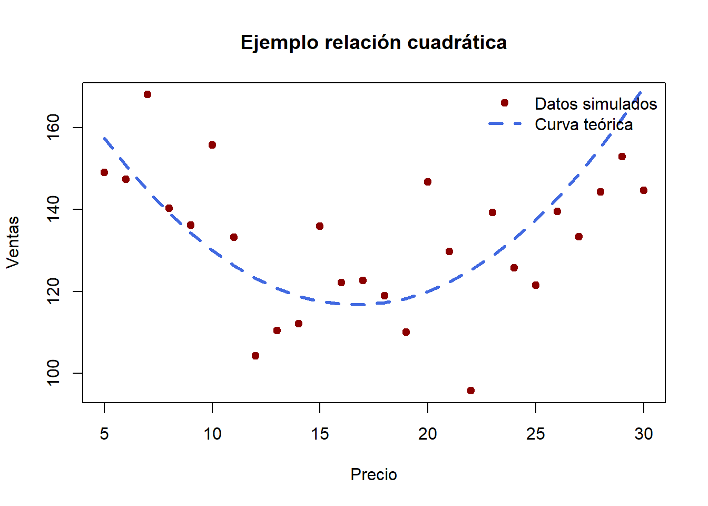

7 Extensiones del modelo de regresión lineal
Hasta ahora, hemos usado modelos de regresión lineal “simples” para predecir ventas en tu restaurante según precio, publicidad o si era semana festiva. Pero el mundo real es más complejo: las variables pueden interactuar entre sí y la relación con las ventas no siempre es lineal.
Veamos cómo ampliar la receta de la regresión lineal para capturar estos matices.
7.1 Cuando los ingredientes se combinan: Interacciones
Imagina que lanzas un nuevo plato y quieres saber cómo influye el precio en las ventas. Pero tal vez el impacto del precio depende de otra variable, por ejemplo, si hiciste o no publicidad.
- Si no hay publicidad, un descuento en el precio podría no atraer a muchos clientes.
- Si sí hay publicidad, ese mismo descuento puede disparar las ventas.
Esto se llama interacción: el efecto de una variable depende del valor de otra.
\[ Ventas = b_0 + b_1 \times Precio + b_2 \times Publicidad + b_3 \times (Precio \times Publicidad) + \varepsilon \]
El término \(b_3\) mide cuánto cambia el efecto del precio cuando hay publicidad.
Tip
Intuición: no todos los ingredientes de tu receta funcionan igual por separado. A veces lo que importa es la mezcla.
Cómo analizar (intuitivamente) el término de interacción
Piensa que el modelo crea dos pendientes (sensibilidades) al precio: una cuando no hay publicidad y otra cuando sí la hay.
Pasos prácticos:
- Grupo base (Publicitad = 0): pendiente del precio = \(b_1\). Es cómo cambian las ventas por unidad de precio cuando no haces campaña.
- Grupo con campaña (Publicidad = 1): pendiente = \(b_1 + b_3\). Tomas la pendiente base y le sumas el ajuste que trae la interacción.
- Interpretación de \(b_3\): es el cambio en la sensibilidad al precio que introduce la publicidad. Si \(b_3 > 0\), la publicidad “suaviza” el efecto negativo del precio (o lo hace más positivo). Si \(b_3 < 0\), lo acentúa en sentido negativo.
- Frase plantilla: “Con publicidad, por cada unidad adicional en el precio las ventas cambian en promedio \((b_1 + b_3)\) unidades; sin publicidad cambian \(b_1\) unidades (ceteris paribus). El término de interacción \(b_3\) indica que la publicidad modifica la sensibilidad al precio en \(b_3\) unidades”.
- Significancia: mira el p-valor de \(b_3\). Si es < 0.05, hay evidencia de que el efecto del precio depende de la publicidad; si no, el ajuste extra podría ser solo ruido.
Visualmente: imagina dos rectas en el mismo gráfico (precio vs. ventas). \(b_3\) es la diferencia entre sus pendientes. Sin dibujar, interpretar interacciones suele ser menos intuitivo.
Precauciones:
- No repitas “\(b_1\) es el efecto del precio” sin decir “cuando Publicidad = 0”.
- A veces el efecto combinado (pendiente con publicidad) es significativo aunque ninguno de los coeficientes individuales lo sea por separado; siempre revisa \(b_1 + b_3\) con su intervalo de confianza si es relevante.
7.1.1 Ejemplos prácticos de interacciones (y cómo interpretar \(b_3\))
Regla general (modelo con interacción):
\[
Y = \beta_0 + \beta_1 X + \beta_2 Z + \beta_3(X \times Z) + \varepsilon
\]
- \(X\): variable continua (p. ej., precio, descuento, tiempo de espera)
- \(Z\): indicador binario (0/1), p. ej., hay publicidad (=1)
- Efecto marginal de \(X\) cuando \(Z=0\): \(β_1\)
- Efecto marginal de \(X\) cuando \(Z=1\): \(β_1 + β_3\)
- Interpretación de \(β_3\): cuánto cambia la pendiente de \(X\) cuando pasas de \(Z=0\) a \(Z=1\).
En dummies×dummies (dos binarias), \(β_3\) es un “difference-in-differences”: el cambio adicional en el grupo con ambos = 1 sobre la suma de efectos individuales.
Nota
¿Qué es un efecto marginal?
Un efecto marginal es simplemente cuánto cambia en promedio el resultado (ventas) cuando una variable sube una unidad y todo lo demás lo dejamos igual.
Piensa que congelas el resto de ingredientes y solo mueves uno: miras cuánto se mueve la salida. Eso es el efecto marginal.
Ejemplos rápidos:
- “Por cada $1 más en el precio (manteniendo publicidad igual) las ventas bajan 12 platos.”
- “Con publicidad activa, ese efecto pasa a ser -6 porque la campaña amortigua el golpe del precio.”
Clave: sin decir “manteniendo lo demás constante” la frase queda incompleta (puede confundir causalidad con simple correlación).
7.1.2 6.1.1 Ejemplos prácticos de interacciones
Para entender mejor, pensemos en distintos contextos donde el efecto de una variable depende de otra. La clave está en que el coeficiente de interacción ((_3)) nos dice cómo cambia la pendiente o el efecto de (X) cuando la condición (Z) pasa de 0 a 1.
7.1.2.1 Ejemplo 1: Precio × Publicidad
En el restaurante, supongamos que queremos medir cómo influye el precio de un plato en las ventas. Sin publicidad, subir el precio en 1 dólar podría reducir las ventas en 12 unidades (\(\beta_1=-12\)).
Pero si hay publicidad, ese efecto negativo se atenúa: la pendiente cambia en +6 (\(\beta_3=+6\)), por lo que el efecto total es \(-12+6=-6\).
Interpretación: la publicidad “protege” al restaurante frente al efecto negativo de subir precios.
7.1.2.2 Ejemplo 2: Descuento × Fin de semana
Imagina que medimos el impacto de los descuentos en el número de clientes. Entre semana, cada 10% de descuento aumenta en 15 clientes las visitas (\(\beta_1=+15\)).
En fin de semana, el efecto es aún mayor: el coeficiente de interacción suma +12 (\(\beta_3=+12\)), de modo que el efecto total es 27.
Interpretación: el descuento funciona siempre, pero mucho mejor el fin de semana, cuando los clientes son más sensibles a promociones.
7.1.2.3 Ejemplo 3: Promoción × Fin de semana (dos dummies)
Supongamos que medimos ingresos con dos variables binarias:
- Promo = 1 si hay promoción.
- FinSemana = 1 si es sábado o domingo.
El coeficiente de interacción (\(\beta_3\)) captura cuánto extra se gana cuando coinciden ambas cosas.
Si la promoción sola sube ventas en 15, y el fin de semana solo sube en 20, pero la combinación sube en 50, entonces el extra de 15 que no se explica por los efectos individuales es precisamente la interacción.
Interpretación: la promoción es especialmente efectiva en fines de semana.
7.1.2.4 Ejemplo 4: Tiempo de espera × Servicio a domicilio
Podemos medir la satisfacción del cliente según el tiempo de espera. En salón, cada minuto extra reduce satisfacción en 0.03 puntos (\(\beta_1=-0.03\)).
Con servicio a domicilio, la penalización es aún mayor: el coeficiente de interacción suma -0.02 (\(\beta_3=-0.02\)), por lo que el efecto total es \(-0.05\).
Interpretación: esperar es malo en cualquier contexto, pero esperar un domicilio es mucho peor que esperar sentado en el restaurante.
7.2 Relaciones no siempre lineales
No siempre el efecto de una variable es recto como una línea. Por ejemplo:
- Si el precio es muy bajo, las ventas suben (¡oferta irresistible!).
- Si subes demasiado el precio, las ventas bajan (¡nadie quiere pagar tanto!).
Esto dibuja una curva en vez de una línea.
Para capturar ese patrón podemos agregar un término cuadrático al modelo:
\[ Ventas = b_0 + b_1 \times Precio + b_2 \times Precio^2 + \varepsilon \]
- \(b_1\) mide el efecto lineal del precio.
- \(b_2\) permite que la curva se doble hacia arriba o hacia abajo.
Tip
Intuición: como en la cocina, no siempre más de un ingrediente mejora el plato. Hay un punto óptimo de sal o picante: demasiado poco o demasiado mucho arruina la receta.